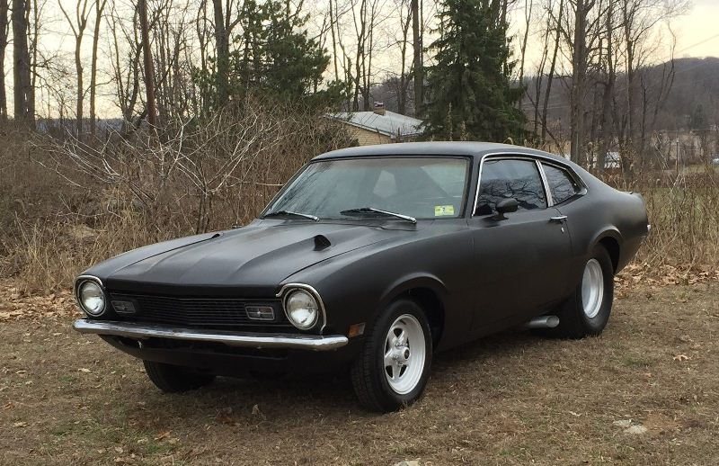

Como você é uma pessoa que está acostumada a viver sozinho, decide ficar no carro.
Caso buzine e ninguém apareça, você simplesmente liga o carro e vai embora.
Ao buzinar, você vê a cortina da janela da sala se movendo e alguém espiando para fora.
Percebendo isso, você saí do carro e fica encostado nele com os braços cruzados.
A luz de fora da porta se acende, e a porta se abre, surge então de calças jeans apertada e uma jaqueta preta cobrindo a camisa branca
com a barriguinha de fora, a bela Olívia.
Você faz questão de abrir a porta do carro pra ela, que toda sorridente entra sem falar nada. O perfume feminino enche todos os cantos
do interior do carro.
Olhando para ela, você nem acredita que aquela mulher tão desejada por todos na escola, agora está no seu carro,
saindo com você, e de todos garotos da escola você foi o único que a beijou de fato.
Seu coração pulsa mais rápido de euforia
sem saber o que fazer e institivamente coloca a mão no porta luva e pega uma das muitas fitas lá de dentro e coloca pra tocar.
Ao ligar o carro, o forte ronco do anuncia a potência do maverik dando a ela a impressão de que aquele é de fato um carro de homem.

Durante alguns minutos na estrada voces apenas se olham e sorriem um para o outro, até você perceber que não sabe onde vai levá-la.
Os único lugares que você geralmente frequenta são aqueles bares imundos cheios de adolecentes drogados e bêbados, onde só se ouve hard core e punk rock.
Você logo imagina a decepção dela ao entrar num lugar desses fedendo a maconha e a cigarro, então decide perguntar a ela onde ela quer ir.
Ela diz que gosta de dançar, mas os lugares que ela frequenta nunca lhe deixariam entrar com a roupa que você está usando no momento.
Então, você tem uma ideia, conversa dizendo que como é o primeiro encontro nada melhor que um lugar sossegado para conversarem
e beberem algo, mantendo o foco na conversação entre voces. Pois a convence que a dança poderia lhes tirar esse sagrado tempo de
se conhecerem. Ela aceita de bom grado sua sugestão, e você a leva em um pub com música ao vivo, e tomam chopp com fritas.
Você decide aonde vão daqui em diante, ou deixa que Olívia decida?